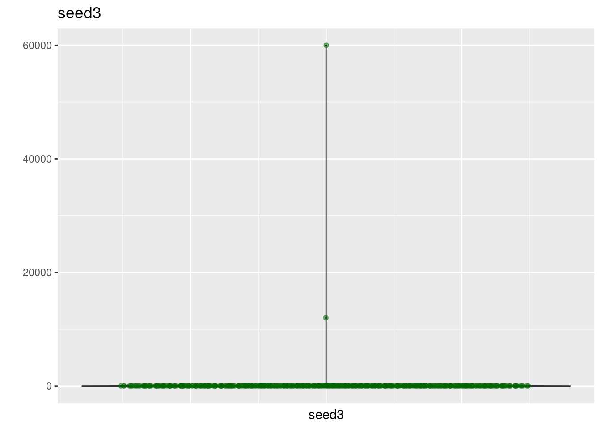
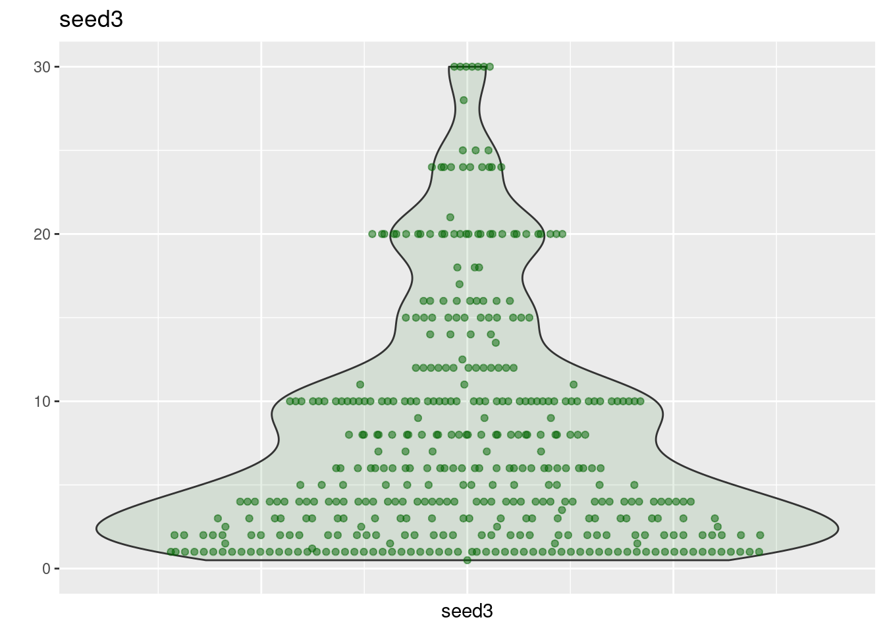
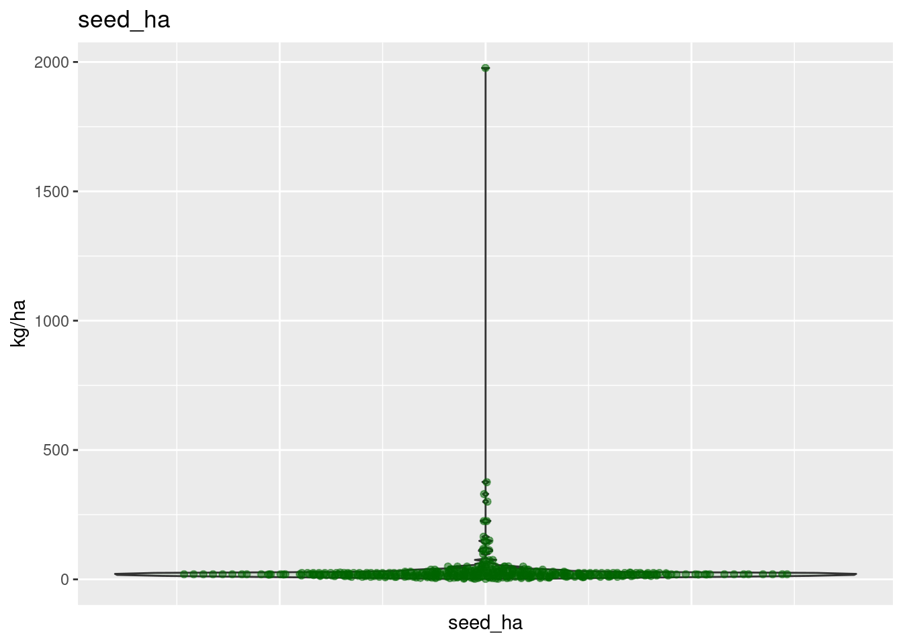
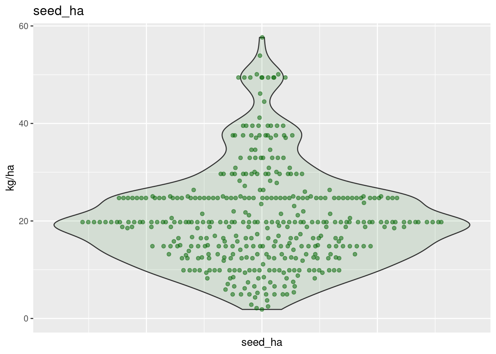
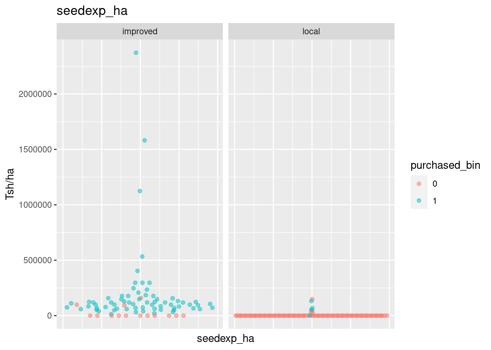
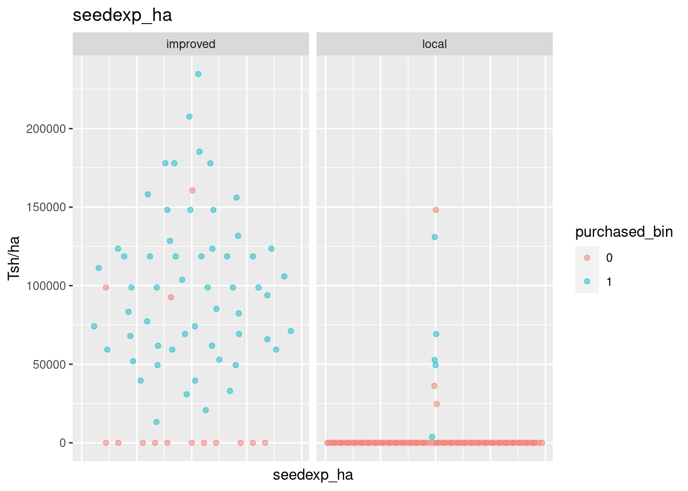
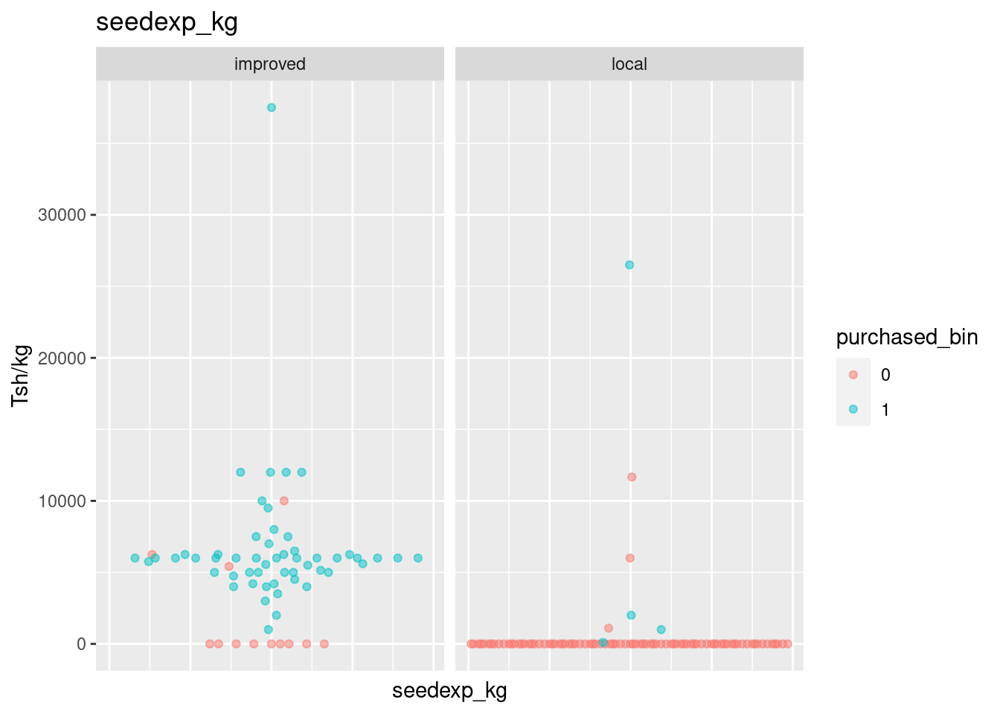
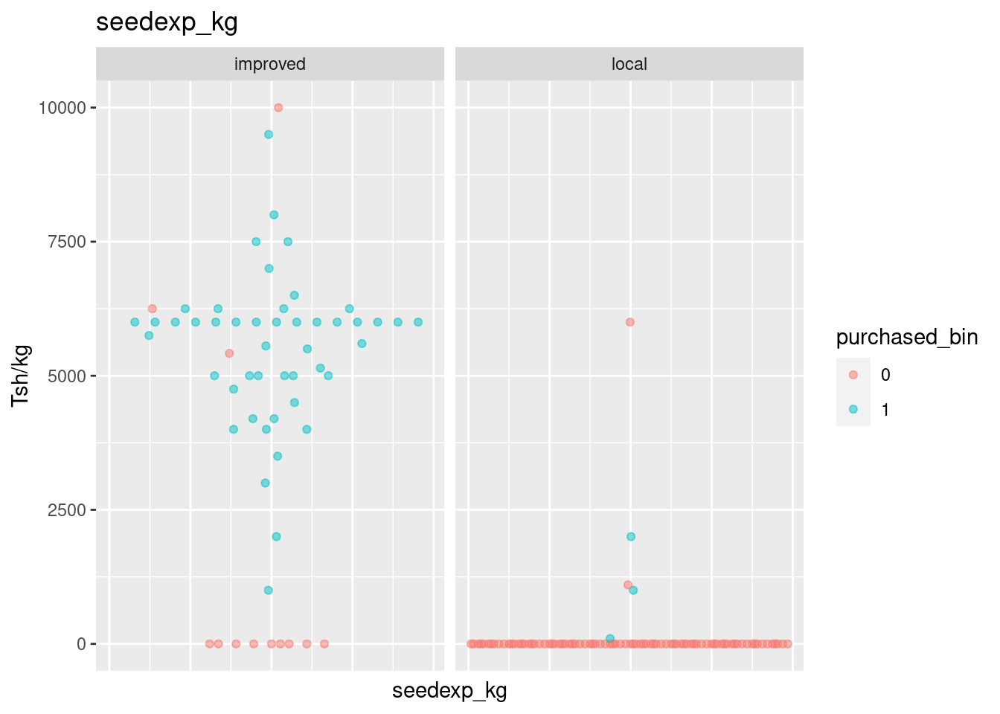
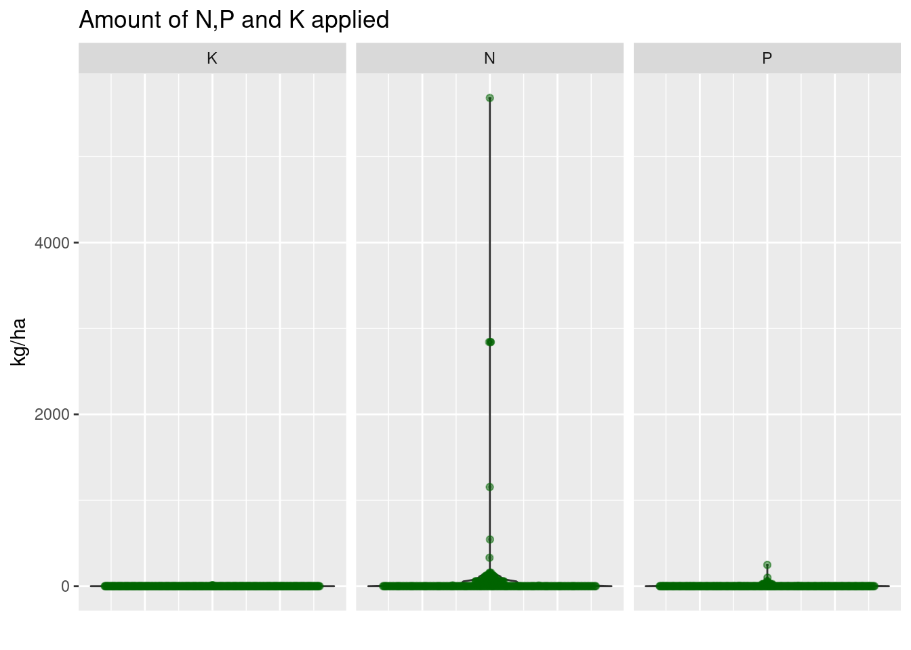
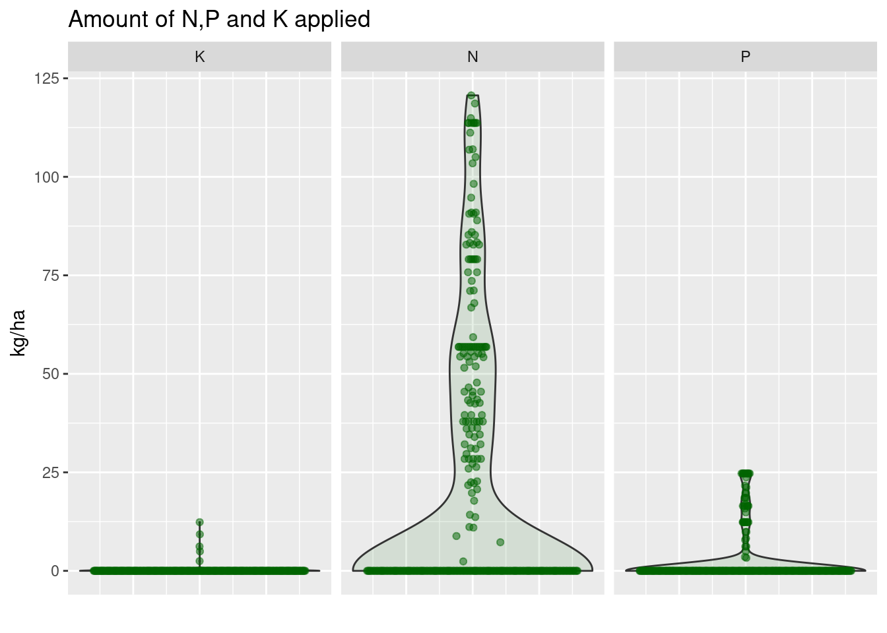

3 Focal plot survey
Focal plot: The maize plot which is “most important” in an economic sense, at the household level, was chosen to be studied in more depth. MUST INCLUDE MAIZE.
3.1 Intervening datasets
| Description | File |
|---|---|
| Main focal plot file | TZAPS17_fp.tab |
| focal plot Metadata | TZAPS17_ODK_fp.xlsx |
| focal plot Seed file | TZAPS17_fp_seed.tab |
| focal plot Other Inputs | TZAPS17_fp_othinp.tab |
3.2 Prepare dataset
fp <- read.table(here("./data/TAMASA2017/TZAPS17_fp.tab"),
header = TRUE,
sep = "\t",
quote = "",
stringsAsFactors = FALSE)Correct missing decimal
fp$area_est[fp$area_est >= 10] <- fp$area_est[fp$area_est >= 10] / 10Convert acres to ha
acres_to_ha <- with(dics, areaunit[areaunit$unit == "Acres", "hectares"])
fp$area_est <- fp$area_est * acres_to_haSet zone and region as factors with meaningful levels
md_geo <- readxl::read_xlsx(here("./data/TAMASA2017/metadata/TZAPS17_ODK_fp.xlsx"),
sheet = "external_choices")
md_region <- md_geo %>% filter(list_name == "regions")
md_district <- md_geo %>% filter(list_name == "districts")fp$zone <- as.factor(fp$zone)
fp$region <- factor(fp$region,
levels = md_region$name,
labels = md_region$label)
fp$district <- factor(fp$district,
levels = md_district$name,
labels = md_district$label)3.2.1 Select useful columns
hhid: household index, field with only unique values:TRUE.enum_date: the date at which the survey took place.plotid: plot index, relates to general household survey where each household plot was assigned a plot_id.fp_index: int, used to merge different focalplot sub datasets with main focal plot dataset. Field with only unique values:TRUE.fp_id: long, general focal plot index. Field with only unique values:TRUE.zone: zone.region: region.district: district.site: site.irrig_bin: was any form of irrigation applied (0/1).area_est: farmer estimate of the focal plot area.
fp_info <- fp %>% select(hhid, enum_date, plotid, fp_index, fp_id, zone, region,
district, site, irrig_bin, area_est)Given that there is no duplicated fp_index, fp_id and hhid entry we can assume that one focal plot is indeed associated with one unique household index.
3.3 Plot area validation
Enumerators were supposed to measure precisely the area of focal plot using GPS devices.
Those measurements might have been a way for us to estimate the reliability of farmers’ estimates of their plot areas. Unfortunately, it appears that no gps measurement has been done for the focal plot area. The columns of interest in the survey are only filled with place holder values: 999.
fp %>% select(matches("area")) %>% head(10)## area_est area_gps area_gps_calc area_gps_conf
## 1 1.2140569 999 999 999
## 2 0.4046856 999 999 999
## 3 1.2140569 999 999 999
## 4 0.4046856 999 999 999
## 5 0.9105427 999 999 999
## 6 0.4046856 999 999 999
## 7 0.8093713 999 999 999
## 8 1.2140569 999 999 999
## 9 0.3035142 999 999 999
## 10 0.6070285 999 999 999fp %>% select(matches("area_gps")) %>% map_dbl(unique)## area_gps area_gps_calc area_gps_conf
## 999 999 9993.4 Seeds
3.4.1 Seed Amounts
3.4.1.1 Seeds datasets
Focal plot seed information can be found in two separate datasets:
- directly in the main focal plot datasets:
TZAPS17_fp.tablater referred to asfp. - in a specific separate file:
TZAPS17_fp_seed.tablater referred to asfp_rseed.
The r in fp_rseed stands for repeat. Some set of questions had to be asked repeatedly.
For example if different species were grown on the same focal plot, the enumerator had to loop through all questions for each species. The answers to the first set of questions were stored in TZAPS17_fp.tab (fp) whereas the answers to the second set of questions onward are stored within TZAPS17_fp_seed.tab(fp_rseed).
We first present the most relevant variables. These variables can be found in the main dataset fp as well as in fp_rseed where they are prefixed with an r.
seedseas: int, season in which seeds were used.seed1: int, crop code, as crop_min see (tabchoicesofTZAPS17_ODK_fp.xlsx). NB: This is not consistent with the questionnaire form whereseed1was a binary varisble indicating seed type (local or improved).seed2: int, seed type (imporved/local) and (purchased/recylced).seed3: long, amount of seeds sown (value).seed4: int, amount of seeds sown (unit).
For the following two variables, we noted inconsistencies between the metadata in both TZAPS17_metadata.xlsx and TZAPS17_ODK_fp.xlsx and the questionnaire form TZAPS17_questionnaires.pdf. In the questionnaire form one extra variable is included, indicating whetever seeds were purchased. This variable is called seed5 too. This variable seems not to be included in the survey. Therefore:
seed5: most likely indicates in which way seeds were obtained (credit, exchange, retained seed).seed6: seed source (small, trader, NGO, cooperative…).
We first subset fp to keep only those aforementioned variables and to keep only data for maize grown in main season. The resulting dataset is called fp_seed.
fp_seed <- fp %>%
filter(mc_crop == "maize" & seed1 == 1 & seedseas == 1) %>%
select(hhid, seed1, seedseas, fp_index, area_est, seed2, seed3, seed4, seed5, seed6)We then load the specific seed data setsfp_rseed, and again keep only values correponding to maize grown in main season.
fp_rseed <- read.table(here("./data/TAMASA2017/TZAPS17_fp_seed.tab"),
header = TRUE,
sep = "\t",
quote = "")
fp_rseed <- fp_rseed %>% filter(rseed1 == 1 & rseedseas == 1)First thing to notice is that there is no reference to household index. So it will be necessary to rely on fp_index to merge it back to the main seed dataset fp_seed.
colnames(fp_rseed)## [1] "fp_index" "fpseed_index" "rseedseas"
## [4] "rseed1" "rseed2" "rseed3"
## [7] "rseed4" "rseed5" "rseed6"
## [10] "fpseed_id" "fpseed_uuid" "fpseed_submission_time"
## [13] "fpseed_parent_table_name" "fpseed_parent_index" "fpseed_tags"
## [16] "fpseed_notes" "fpseed_version" "fpseed_duration"
## [19] "fpseed_submitted_by"It should also be noted that fp_rseed represents only an additional 20 datapoints compare to the 437 already present in fp_seed.
Among those 20, 11 overlaps with fp_index in the main seed datasets fp_seed. This is not consistent with our understanding of the datasets. We would expect all the fp_index present in fp_rseed to be also present in fp_seed, if fp_rseed consisted indeed of additional information on the plot already described in fp_seed.
There also appears to be some duplicated piece of information between the two datasets, something we would hardly expect. Example:
fp_rseed %>%
filter(fp_index %in% c(23, 51)) %>%
select(fp_index, fpseed_index, starts_with("rseed"))## fp_index fpseed_index rseedseas rseed1 rseed2 rseed3 rseed4 rseed5 rseed6
## 1 23 16 1 1 1 5 7 1 2
## 2 51 34 1 1 4 8 8 5 7fp_seed %>%
filter(fp_index %in% c(23, 51)) %>%
select(fp_index, starts_with("seed")) %>%
arrange(fp_index)## fp_index seed1 seedseas seed2 seed3 seed4 seed5 seed6
## 1 23 1 1 1 5 7 1 2
## 2 51 1 1 1 12 8 1 1Giving the small number of extra data points provided by the seed specific dataset fp_rseed and the aforementioned inconsistencies we decided not to include it in our calculations.
3.4.1.2 Calculate seed amount in kg
table(fp_seed$seed4)##
## 0 1 3 4 5 6 7 8 10 11 12 99
## 3 5 1 3 19 1 59 276 57 7 5 199 is not an existing unit category:
dics$unit$cat## [1] NA 0 1 2 3 4 5 6 7 8 9 10 11 12 13 14 15 16 17 18 19 20 21 22 23 24 25Setting 99 to NA in seed4
fp_seed$seed4[fp_seed$seed4 == 99] <- NAPlot of amount of seed purchased:
plot_var(fp_seed, seed3, plot.unit = "")
Removing some aberrant outliers. Those few points ranging a couple of order of magnitude away from the rest. NB: It is not a matter of the unit they are expressed in.
fp_seed$seed3 <- outlier_to_NA(fp_seed$seed3, quantile = 0.95)plot_var(fp_seed, seed3, plot.unit = "")
fp_seed <- fp_seed %>%
inner_join(dics$unit, by = c("seed4" = "cat")) %>%
mutate(seed_kg = ifelse(kg_maize > 0,
seed3 * kg_maize,
NA))Calculate main season seed input per hectare
fp_seed <- mutate(fp_seed, seed_ha = seed_kg / area_est)Delete aberrant values and outliers
plot_var(fp_seed, seed_ha, plot.unit = "kg/ha")
fp_seed$seed_ha[fp_seed$seed_ha < 1] <- NA
fp_seed$seed_ha <- outlier_to_NA(fp_seed$seed_ha, quantile = 0.95)plot_var(fp_seed, seed_ha, plot.unit = "kg/ha")
Make seed type and source variables more explicit, by joining fp_seed with relevant dictionaries.
fp_seed <- inner_join(fp_seed, dics$seedsource, by = "seed6")
fp_seed <- full_join(fp_seed, dics$seedtype, by = "seed2")Organize the final dataset: order and rename some columns.
fp_seed <- fp_seed %>%
select(hhid, seed_ha, type, source) %>%
rename(seedsource = source)Separate seedtype into two new variables seedtype and purchased_bin.
fp_seed <- fp_seed %>%
separate(type, into = c("seedtype", "purchased_bin"), sep = ",")
fp_seed$purchased_bin <- trimws(fp_seed$purchased_bin)fp_seed$purchased_bin <- abs(as.numeric(factor(fp_seed$purchased_bin))-2)
fp_seed$purchased_bin <- factor(fp_seed$purchased_bin)3.4.2 Seed costs
Looking only at plots where maize is the only crop grown (mc_prop = 1)
during main season.
fp_seedexp <- fp %>%
filter(seed1 == 1 &
seedseas == 1 &
mc_crop == "maize" &
mc_prop == 1 &
smc_crop == "") %>%
select(hhid, area_est, seedexp)Calculate seed expenditures in Tsh per Hectares.
fp_seedexp <- fp_seedexp %>% mutate(seedexp_ha = seedexp / area_est)and include that variables in the main seed dataset fp_seed.
fp_seed <- fp_seedexp %>%
select(hhid, seedexp_ha) %>%
inner_join(fp_seed, ., by = "hhid")seed_cost_plot(fp_seed, seedexp_ha, plot.unit = "Tsh/ha")
fp_seed$seedexp_ha <- outlier_to_NA(fp_seed$seedexp_ha, quantile = 0.95)seed_cost_plot(fp_seed, seedexp_ha, plot.unit = "Tsh/ha")
Calculate seeds expenditures per kg
fp_seed <- fp_seed %>% mutate(seedexp_kg = seedexp_ha / seed_ha)seed_cost_plot(fp_seed, seedexp_kg, plot.unit = "Tsh/kg")
fp_seed$seedexp_kg <- outlier_to_NA(fp_seed$seedexp_kg, quantile = 0.95)seed_cost_plot(fp_seed, seedexp_kg, plot.unit = "Tsh/kg")
For a matter of consistency, we set the price of the non-purchased seeds to zero.
id_zero <- fp_seed$purchased_bin == 0
fp_seed$seedexp_ha[id_zero] <- ifelse(fp_seed$seedexp_ha[id_zero] > 0, 0, 0)
fp_seed$seedexp_kg[id_zero] <- ifelse(fp_seed$seedexp_kg[id_zero] > 0, 0, 0)Set local seeds price to zero ?
3.4.3 Hybrid vs local
Make two new variables containing the price of purchased seeds for both local (seedprice_local) and improved varieties (seedprice_hybrid).
fp_seed$seedprice_hybrid <- NA
id_hyb <- which(fp_seed$seedtype == "improved")
fp_seed$seedprice_hybrid[id_hyb] <- fp_seed$seedexp_kg[id_hyb]fp_seed$seedprice_local <- NA
id_lcl <- which(fp_seed$seedtype =="local")
fp_seed$seedprice_local[id_lcl] <- fp_seed$seedexp_kg[id_lcl]3.5 Pigeon Pea
fp_pigeonpea <- fp %>%
filter(seed1 == 9 & mc_crop == "pigeon_pea") %>%
select(hhid, mc_crop, seed1, seedseas, fp_index, area_est,
seed2, seed3, seed4, seed5, seed6, seedexp)
fp_pigeonpea %>% select(hhid, mc_crop, seed1, seedseas, fp_index, area_est, seedexp)## hhid mc_crop seed1 seedseas fp_index area_est seedexp
## 1 N04020205 pigeon_pea 9 1 252 1.2140569 9000
## 2 S08010201 pigeon_pea 9 1 15 0.4046856 125000
## 3 S08020301 pigeon_pea 9 1 20 0.4046856 0Calculate seed cost in Tsh/ha (seedexp_ha) and Tsh/kg seedexp_kg.
fp_pigeonpea %>%
mutate(seed_kg = seed3 * dics$unit$kg_maize[which(dics$unit$cat == fp_pigeonpea$seed4)],
seedexp_ha = seedexp / area_est,
seedexp_kg = seedexp / seed_kg,
seed_ha = seed_kg / area_est) %>%
select(hhid, mc_crop, seed_kg, seed_ha, seedexp_ha, seedexp_kg) ## hhid mc_crop seed_kg seed_ha seedexp_ha seedexp_kg
## 1 N04020205 pigeon_pea 20 16.473692 7413.161 450.00
## 2 S08010201 pigeon_pea 3 7.413161 308881.727 41666.67
## 3 S08020301 pigeon_pea 4 9.884215 0.000 0.00Unfortunately there is only 3 household with data on pigeon pea…
3.6 Fertilizer
3.6.1 Select variables
For maize grown in main season select useful variable:
hhid: household index.fp_index: focal plot index.area_est: farmer estimate of the focal plot area.fertilizer_bin: was artificial fertilizer applied on focal plot during main season 2016-2017.amnd0: input type.amnd0b: NPK type.amnd4: amount applied.amnd5: unit.inputexp: cost of input in Tsh.
fp_fert <- fp %>%
filter(mc_crop == "maize" & seed1 == 1 & seedseas == 1) %>%
select(hhid, fp_index, area_est, fertilizer_bin, amnd0, amnd0b, amnd4, amnd5, inputexp)Remove aberrant values for input expenditures.
fp_fert$inputexp[fp_fert$inputexp == -99] <- NAOne bizarre feature of this dataset is that 59 focal plots said to have had no fertilizer input of any kind (amnd0 == 0), have non null fertilizing cost (inputexp != 0). See example
fp_fert %>%
filter(amnd0 == 0 & inputexp != 0) %>%
select(hhid, fp_index, amnd0, amnd0b, inputexp) %>%
head()## hhid fp_index amnd0 amnd0b inputexp
## 1 N01010101 569 0 NA 435000
## 2 N01010106 552 0 NA 30000
## 3 N01020101 402 0 NA 30000
## 4 N01020103 392 0 NA 117500
## 5 N01020104 401 0 NA 72000
## 6 N01020107 400 0 NA 68000Having no idea regarding what might have caused these inconsistencies, we simply filter out the spurious focal plots.
fp_fert <- fp_fert %>%
filter(!(amnd0 == 0 & inputexp != 0))3.6.2 Calculate NPK input from input type and amount
fp_fert <- inner_join(fp_fert, dics$inp, by = c("amnd0" = "cat"))
fp_fert <- inner_join(fp_fert, dics$unit, by = c("amnd5" = "cat"))Amount of NPK calculated in kg/ha.
fp_fert <- fp_fert %>% mutate(amount = amnd4 * kg,
N = (amount * Nconc) / area_est,
P = (amount * Pconc) / area_est,
K = (amount * Kconc) / area_est)Set points with no input indicated by "none" to zero.
fp_fert <- fp_fert %>% zero_if_no_input(c("N", "P", "K"), na_string = "none")3.6.3 Calculate additional inputs
3.6.3.1 Load dataset
fp_fert2 <- read.table(here("./data/TAMASA2017/TZAPS17_fp_othinp.tab"),
header = TRUE,
sep = "\t",
quote = "")3.6.3.2 Join other input and fertlizer datasets by focal plot index
fp_fert2 <- inner_join(x = select(fp_fert, fp_index),
y = fp_fert2,
by = "fp_index")3.6.3.3 Calculate NPK concentrations from input type
fp_fert2 <- inner_join(fp_fert2, dics$inp, by = c("ramnd0" = "cat"))
fp_fert2 <- inner_join(fp_fert2, dics$unit, by = c("ramnd5" = "cat"))
fp_fert2 <- fp_fert2 %>%
mutate(ramount = ramnd4 * kg) %>%
select(fp_index, input, ramount, Nconc, Pconc, Kconc, ramnd0)Prefix additional fertlizer variables with an “r” to be able to distinguish them from the initial variables.
append_r <- str_which(names(fp_fert2), "input|conc")
names(fp_fert2)[append_r] <- paste0("r", names(fp_fert2)[append_r])3.6.3.4 Calculate total NPK inputs
Join main and additional fertlizer datesets together, to have access to area-est.
fp_fert2 <- full_join(fp_fert, fp_fert2, by = "fp_index")Calculate additional NPK amounts in kg/ha.
fp_fert2 <- fp_fert2 %>% mutate(rN = (ramount * rNconc) / area_est,
rP = (ramount * rPconc) / area_est,
rK = (ramount * rKconc) / area_est)Add up additional NPK inputs per focal plot.
fp_fert3 <- fp_fert2 %>%
select(fp_index, rN, rP, rK) %>%
group_by(fp_index) %>%
summarise_all(sum)Put input types in one variable.
fp_fert4 <- fp_fert2 %>%
select(fp_index, rinput, ramount) %>%
group_by(fp_index) %>%
summarise_all(~ paste0(., collapse = " ; "))3.6.4 Combine input types
fp_fert <- fp_fert %>%
select(hhid, fp_index, fertilizer_bin, inputexp, N, P, K, input, amount) %>%
inner_join(fp_fert3, by = "fp_index") %>%
inner_join(fp_fert4, by = "fp_index")fp_fert <- fp_fert %>% zero_if_no_input(c("rN", "rP", "rK"), na_string = "NA")Combine all NPK inputs into one variable.
fp_fert <- add_fert_input(fp_fert)plot_var_facet(fp_fert,
vars = c("N", "P", "K"),
plot.unit = "kg/ha",
title = "Amount of N,P and K applied")
Cut off high values. K is left as is.
fp_fert <- modify_at(.x = fp_fert,
.at = c("N", "P"),
.f = outlier_to_NA,
quantile = 0.95)plot_var_facet(fp_fert,
vars = c("N", "P", "K"),
plot.unit = "kg/ha",
title = "Amount of N,P and K applied")
Put all input types in one variable, and the different amounts in another unique variable.
fp_fert$input <- paste(fp_fert$input, fp_fert$rinput, sep = ", ")
fp_fert$amount <- paste(fp_fert$amount, fp_fert$ramount, sep = ", ")Finally, define relevant variable subset.
fp_fert <- fp_fert %>% select(hhid, fertilizer_bin, input, amount, N, P, K, inputexp)3.7 Cost of hiring power sources
Select only focal plots with maize grown as main crop in main season.
Here all variables of interest are related to traction hence they all start with trc_.
The middle part indicate the type of task:
a1: land clearing.a2: ploughing.a3: harrowing.a4: planting.a5: other activity described intrc_a5_spec.
Whereas the suffix refers to the cost of hiring:
ocost: oxens.mcost: a machine.
Example: trc_a2_ocost corresponds to the cost of hiring oxens for ploughing.
fp_hire <- fp %>%
filter(seed1 == 1 & seedseas == 1) %>%
select(hhid, area_est, ends_with("cost"), trc_a5_spec)Add up oxen and machine hiring costs, then divide by area.
trc_a <- str_which(colnames(fp_hire), "^trc_a\\d")
x <- which(rowSums(is.na(fp_hire[trc_a])) < 11)
fp_hire[x, "power_exp_ha"] <- rowSums(fp_hire[x, trc_a], na.rm = TRUE) / fp_hire$area_est[x]fp_hire <- fp_hire %>% select(hhid, power_exp_ha)3.8 Merge
Combine focal plot info, seed (amount + cost), fertilizer, traction cost data in one data.frame.
focalplot <- reduce(list(fp_info, fp_seed, fp_fert, fp_hire),
full_join,
by = "hhid")Save intermediate dataset.
write_csv(x = focalplot,
path = here("./data/extracted/focalplot.csv"))3.9 Recap
read.csv(here("./docs/tables/focalplot_recap_tab.csv")) %>%
knitr::kable()| Variable | Description | Unit | Type |
|---|---|---|---|
| hhid | general household index starts with S or N depending on whether the household is located in the Southern or Northen zone. | - | character |
| enum_date | survey date | - | character |
| plotid | plotid | - | character |
| fp_index | fp_index use to merge different focalplot sub dataset with main focal plot dataset | - | character |
| fp_id | fp_id | - | character |
| zone | zone | - | character |
| region | region | - | character |
| district | district | - | character |
| site | site | - | character |
| irrig_bin | was the focal plot irrigated in any way | - | integer |
| area_est | focal plot area estimated by farmer | \(ha\) | double |
| seed_ha | amount of seed | \(kg.ha^{-1}\) | double |
| seedtype | seed type:[improved|local] & [purchased|recycled] | - | character |
| purchased_bin | were the seed purchased | - | integer |
| seedsource | seed origin/supplier | - | character |
| seedexp_ha | seed expenditures per ha | \(Tsh.ha^{-1}\) | double |
| seedexp_kg | seed expenditures per kg | \(Tsh.kg^{-1}\) | integer |
| seedprice_hybrid | seed price for hybrid (improved) varieties | \(Tsh.kg^{-1}\) | integer |
| seedprice_local | seed price for local (improved) varieties | \(Tsh.kg^{-1}\) | integer |
| fertilizer_bin | was any kind of fertilizer applied | - | integer |
| input | input name: input1, input2 | - | character |
| amount | amount of fertilizer applied | \(kg\) | pair of integer |
| N | amount of N applied | \(kg.ha^{-1}\) | double |
| P | amount of P applied | \(kg.ha^{-1}\) | double |
| K | amount of K applied | \(kg.ha^{-1}\) | double |
| inputexp | total input price | \(Tsh\) | integer |
| power_exp_ha | cost of hiring a power resource | \(Tsh.kg^{-1}\) | double |